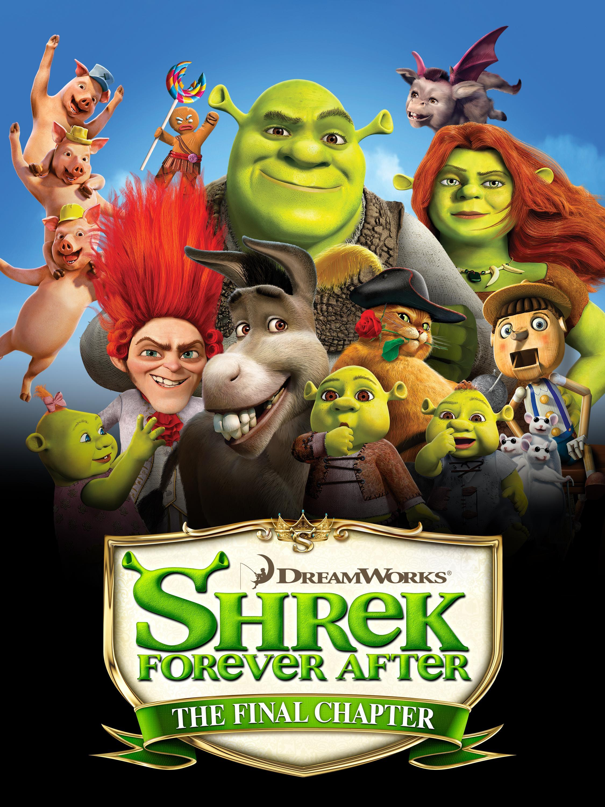
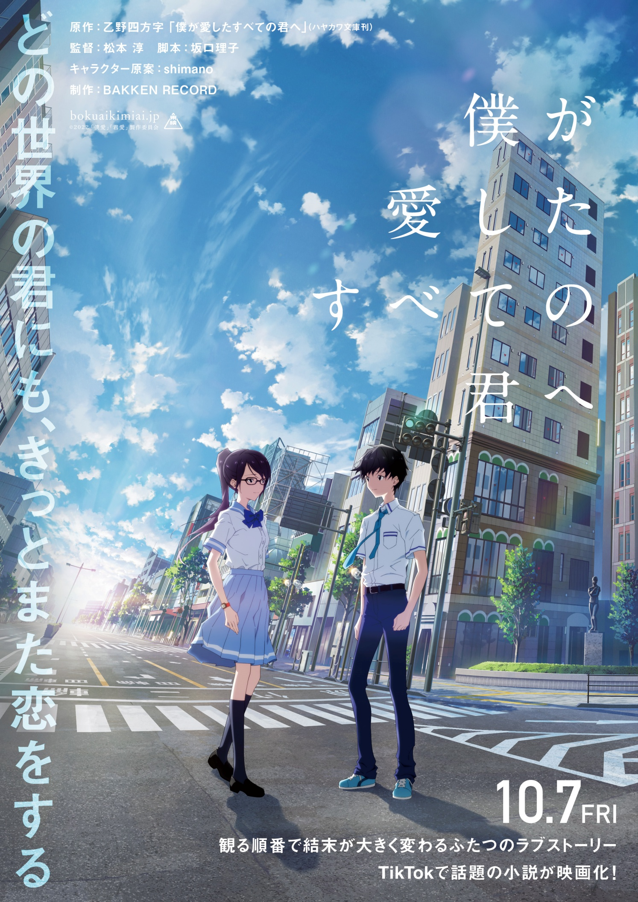

Top 1: Kimi No Nawa

Two teenagers, Taki and Mitsuha, mysteriously swap bodies and form a deep connection across time and space, leading them to uncover a tragic event and fight to change fate.
Top 2: A Silent Voice

A former bully, Shoya Ishida, seeks redemption by reconnecting with Shoko Nishimiya, a deaf girl he once tormented, leading to a heartfelt journey of forgiveness and self-acceptance.
Top 3: Shrek Forever After
Shrek, longing for his old ogre life, makes a deal with Rumpelstiltskin that backfires, trapping him in an alternate reality where he must fight to restore his world and family.
Top 4: The Bee Movie
A bee named Barry B. Benson sues humanity for exploiting bees but soon realizes the consequences of stopping honey production and works to fix his mistake.
"Ya like jazz?"
Top 5: The Amazing Spider-Man

Peter Parker discovers his past, gains spider-like abilities, and battles the Lizard while uncovering secrets about his parents.
Top 6: I Want to Eat Your Pancreas

A reserved boy discovers the secret diary of a terminally ill girl, Sakura, and forms an unexpected bond with her, learning to embrace life through their fleeting friendship.
Top 7: To Every You I've Loved Before
A boy moves between parallel worlds, experiencing different versions of love and relationships, exploring the impact of choices across realities.
Top 8: To Me, the One Who Loved You
A boy living in a world where people can travel between parallel universes falls in love with a girl, only to face a heartbreaking choice that alters their fates across realities.
Top 9: Avengers Endgame

The Avengers reunite for a final battle to undo Thanos' snap and restore the universe, leading to epic sacrifices and the ultimate showdown.
Top 10: Despicable Me
A supervillain, Gru, adopts three orphan girls as part of his evil plan to capture the moon but unexpectedly grows to love them, changing his life forever.